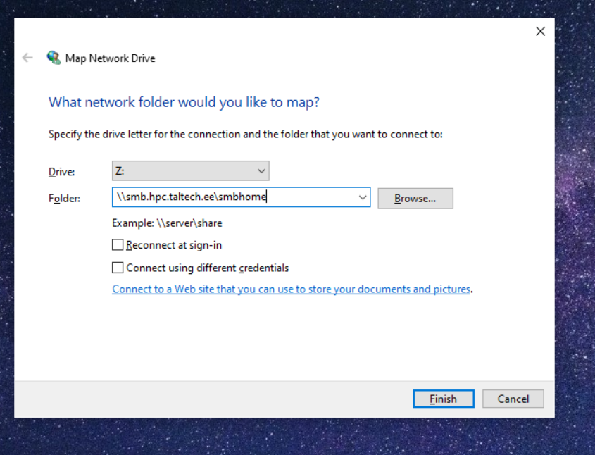
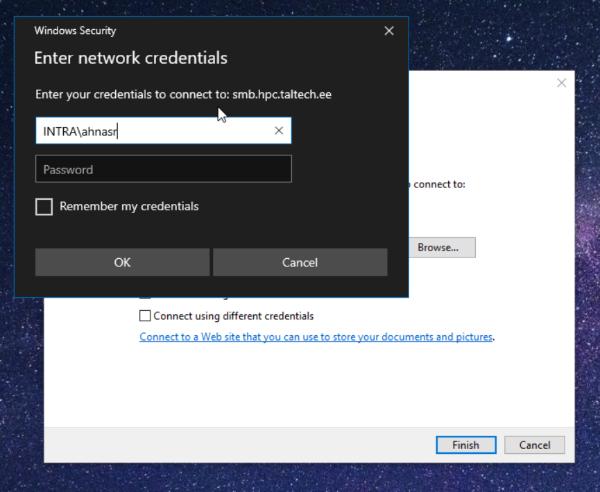
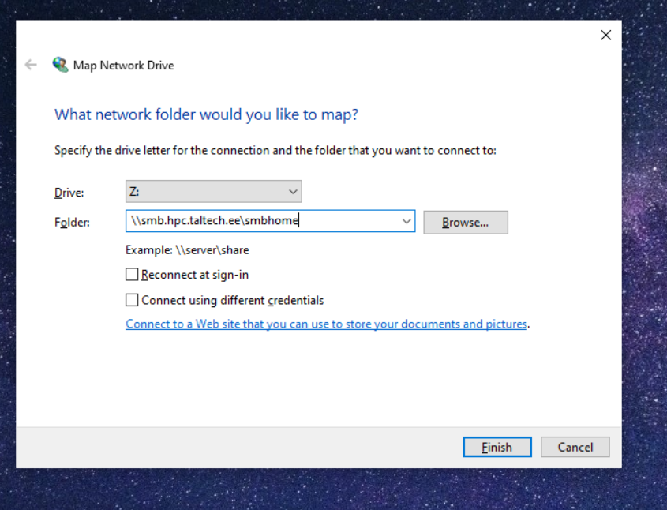
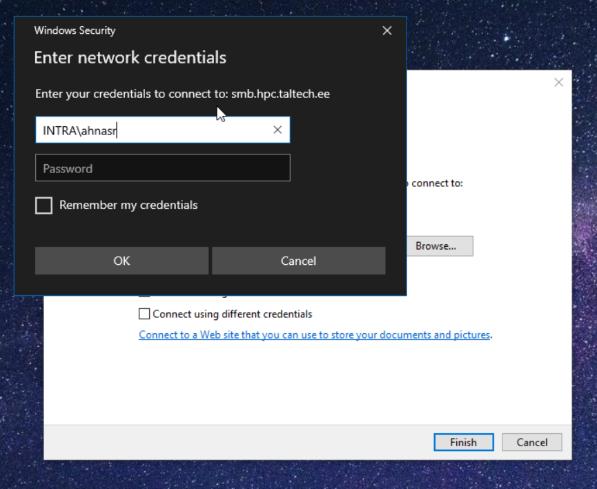

not changed to rocky yet
Accessing SMB/CIFS network shares
The HPC center exports two filesystems as Windows network shares:
| local path on cluster | Linux network URL | Windows network URL |
|---|---|---|
| /gpfs/mariana/smbhome/$USER | smb://smb.hpc.taltech.ee/smbhome | \\smb.hpc.taltech.ee\smbhome |
| /gpfs/mariana/smbgroup | smb://smb.hpc.taltech.ee/smbgroup | \\smb.hpc.taltech.ee\smbgroup |
| /gpfs/mariana/home/$USER | not exported | not exported |
These can be accessed from within university or from EduVPN.
Each user automatically has a directory within smbhome. To get a directory for group access, please contact us (a group and a directory need to be created).
Windows access
From Windows, the shares can be found using the Explorer “Map Network Drive”.
GUI:
right click on myPC add network location or Map network
server >>> \\smb.hpc.taltech.ee\smbhome
username >>> INTRA\<uni-id>
 



Powershell:
run net use \\smb.hpc.taltech.ee\smbhome /user:INTRA\<uni-id>
check success with get-smbconnection
Linux access
On Linux with GUI Desktop, the shares can be accessed with nautilus browser.
From Linux commandline, the shares can be mounted as follows:
dbus-run-session bash
gio mount smb://smb.hpc.taltech.ee/smbhome/
or
dbus-run-session bash
gio mount smb://smb.hpc.taltech.ee/smbgroup/
you will be asked for “User” (which is your UniID), “Domain” (which is “INTRA”), and your password.
To disconnect from the share, unmount with
gio mount -u smb://smb.hpc.taltech.ee/smbhome/
gio mount -u smb://smb.hpc.taltech.ee/smbgroup/
If you get “Error mounting location: Location is not mountable”, then you are not in the correct network (e.g. VPN is not running), or you don’t have a dbus session.
On Debian, the following packages need to be installed: gvfs gvfs-common gvfs-daemons gvfs-fuse gvfs-libs libsmbclient gvfs-backends libglib2.0-bin